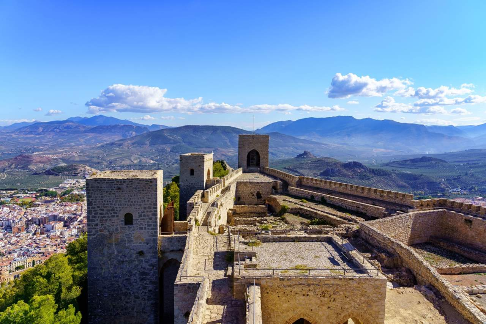

From:XXXXXX To: Elmer B.
El Castillo de Santa Catalina se alza sobre uno de los parajes más espectaculares de la provincia de Jaén, es una maravilla local. La construcción visible actual es de origen cristiano, siendo erigida tras la conquista de la ciudad por Fernando III el Santo en 1246.
Pasear por sus pasillos y merendar en las tierras cercanas es una experiencia inolvidable. De hecho la gente de Jaén se reune tradicionalmente una vez al año para comer junto al castillo. ¿Te apuntas a la proxima?